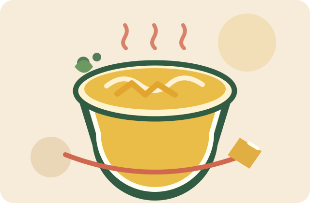
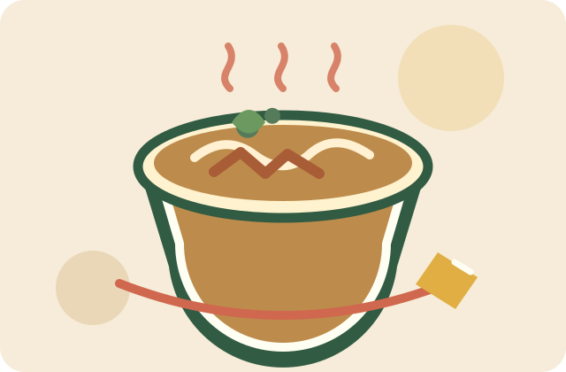
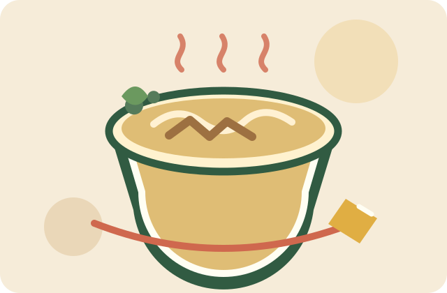
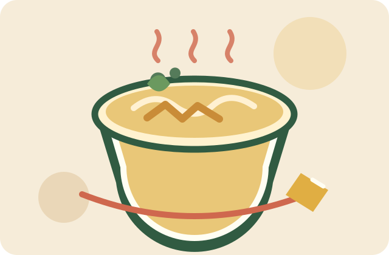
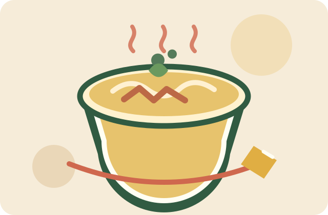
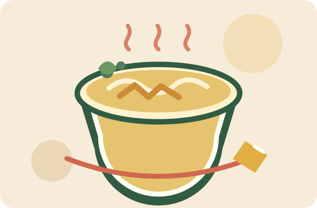

Ringan & segar Soto Ayam BeningRp18.000Kuah bening gurih dengan ayam suwir, soun, kol, dan taburan seledri.Lihat lokasi ↗
Paling dicari Soto Ayam LamonganRp20.000Ayam suwir dengan koya gurih, telur, dan perasan jeruk nipis.Lihat lokasi ↗
Porsi mantap Soto Daging SapiRp25.000Potongan daging sapi empuk dalam kuah rempah yang kaya aroma.Lihat lokasi ↗
Kuah creamy Soto BetawiRp28.000Kuah santan creamy dengan daging sapi, tomat, dan emping renyah.Lihat lokasi ↗
Tekstur khas Soto BabatRp24.000Babat yang dimasak hingga empuk, dipadukan kuah gurih dan bawang goreng.Lihat lokasi ↗
Favorit pecinta kikil Soto KikilRp23.000Kikil kenyal dengan kuah hangat, daun bawang, dan sambal pilihan.Lihat lokasi ↗
Komplet Soto CampurRp27.000Kombinasi ayam, telur, sayuran, dan soun dalam satu mangkuk lengkap.Lihat lokasi ↗
Gurih berempah Soto CekerRp20.000Ceker ayam empuk dengan kuah rempah, soun, dan taburan seledri.Lihat lokasi ↗